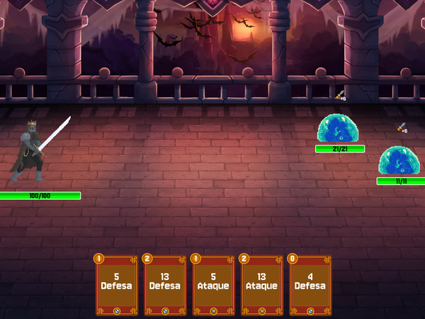
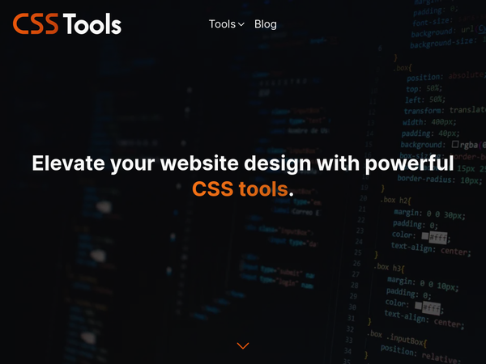

Olá, sou o
Sérgio Júnior,
Desenvolvedor Web
Sobre mim
Sou estudante de Computação na Universidade Federal de Minas Gerais e faço trainee na IJunior. Sou entusiasta de tecnologia, sempre testando coisas novas e também apaixonado pela matemática, pela forma como tudo nela está interconectado. Também estou descobrindo novos ares na música, aprendendo a tocar guitarra. Está sendo bem legal!
Projetos
-

TP de PDS1
Trabalho Prático da disciplina de PDS1 inspirado no jogo Splay the Spire. Foi feito na linguagem C usando a biblioteca Allegro.
Acessar repositório -

CSS Tools
Um site com algumas ferramentas CSS para ajudar na estilização das páginas HTML.
Acessar site